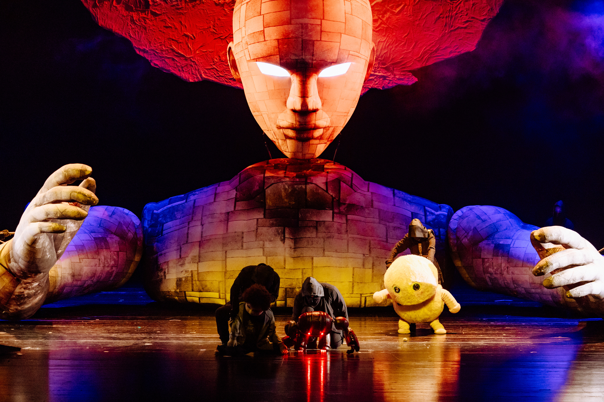
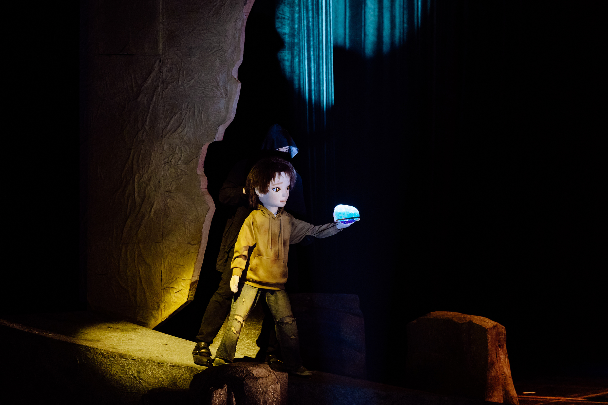
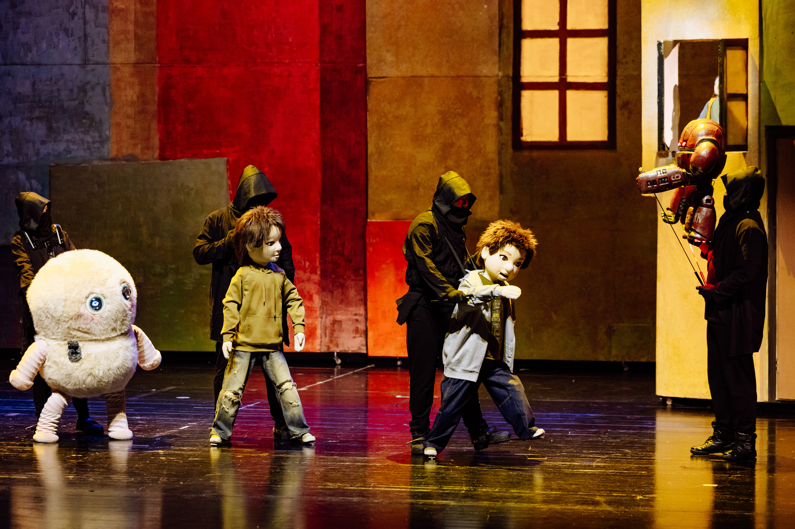
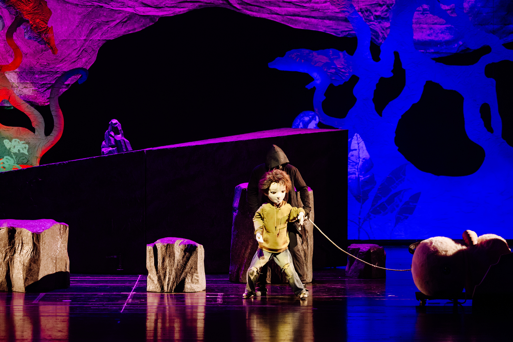
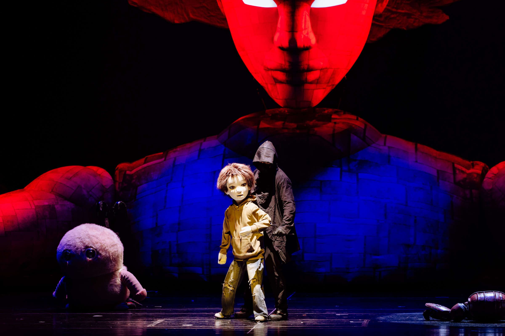

引子
《山海经》原典里,活着的神祇与异兽不止一个两个。夸父追日、刑天舞戚、精卫填海、九尾狐、毕方、应龙……任何一部「山海经题材」的剧,都面临一个诱人又危险的选项:能不能把他们都请上台?
惊喜之夜最终没有这么做。《山海经·巨灵之梦》让「巨灵」站在舞台中心,用一尊 6 米 × 10 米的巨偶、90 分钟的叙事时长,去承载一整部戏的分量。
这是一次「减法」的创作选择。

一、能写群像,为什么只讲一个
从文本资源的角度,山海经是一座矿。做群像戏,线索是现成的:一神一段、一兽一幕,十几个神话碎片拼起来,信息量足,奇观也足。这是许多「东方奇幻」题材默认的打开方式。
但奇观堆得越满,观众反而越难被真正带进去。每一个神祇都只是匆匆亮相、留下一个剪影,就被下一个顶替。舞台上什么都有,台下记住的却往往只是「很热闹」。
《巨灵之梦》最终舍掉了这种「打开方式」。毕方、九尾狐、精卫、应龙这些神兽依然存在于剧作的「神兽宇宙」中,但它们不再是并列的主角,而是围绕「巨灵」展开的叙事层次。戏的重量,集中在一个形象上——一个可以仰望、可以凝视、可以在 90 分钟里慢慢看完的形象。
这不是资源不够,而是刻意让它「不够」。

二、「留白」不是少,是克制
惊喜之夜官网把公司的创作方法论写成四条,第三条是「留白与节制」:
这句话不是文案,是工作原则。放在《巨灵之梦》上,它意味着几件具体的事:

- 不把《山海经》原典逐字复述,挑出一条情感动线讲清楚就好;
- 不让舞台上每一秒都填满声光电,给巨偶留出被观众凝视的空间;
- 不把结局封死,让观众走出剧场时,还能继续想。
留白的对立面不是「信息量大」,而是「把观众挤出去」。当舞台信息密度高到观众来不及理解、来不及共情,他们就只能被动地接收,而不是主动地参与。这恰恰背离了公司的第二条方法论——「观众即主角」。
6 米高的巨灵可以被做得非常繁复,也可以被做得足够克制。选择后者,意味着把观众的位置留出来。

三、减法不是第一次用的刀
回看惊喜之夜的剧目矩阵,「减法」这把刀其实一直在用,只是方式不同。
《终极骗局 3.0》——沉浸式互动游戏戏剧,300+ 场、13+ 城巡演、单场 135 人。表面上它是一部「信息密度极高」的多线叙事作品,但真正让这部戏成立的,不是多线本身,而是结局的开放。惊喜之夜没有给出「正确答案」,而是把判断权留给每一位入戏的观众。开放结局,本质上是另一种留白。
《聂小倩》——沉浸新中式湘剧,保留湘剧高腔,把观众带进兰若寺的空间。观演距离不足一米。它没有把戏曲「翻译」给观众,没有用现代话剧的方式降低门槛,而是让观众自己走进戏曲原本的语境里。官方的一句话写得很直白:「不是把戏曲搬进小剧场,而是让观众走进戏曲的世界。」这句话本身就是「减法」:减掉了解释,减掉了翻译,减掉了中间层。
《海底两万里》——单场 1000 人的大体量,巨型鲸鱼装置、鹦鹉螺号潜艇。看起来是「加法」,但这部戏真正的叙事支点是一头鲸——一个形象撑住整部戏,其他都是它的衬托。这和《巨灵之梦》的结构其实一脉相承。
同一家公司的不同剧目,在「减法」上给出了不同的答案:有的减掉解释,有的减掉答案,有的减掉主角数量。但背后是同一套判断——舞台上最重要的不是「给了多少」,而是「让观众接住了多少」。

四、行业里还有谁在这么做
「少即是多」不是惊喜之夜独享的理念。当代戏剧、尤其是当代木偶戏领域,一直有创作者把「减法」当作核心方法。
欧洲当代木偶评论平台 European Contemporary Puppetry Critical Platform 刊登过一篇对塞尔维亚克拉古耶瓦茨儿童剧院(Theatre for Children Kragujevac)作品 The Silent Boy(导演 Tin Grabnar,编剧 Ana Duša)的评论,文章标题就叫 The Subtlety of Minimalist Theatre。
这部戏讲的是一个男孩在一次意外中失去听力之后,家庭内部的情感变化。让这部戏区别于大多数同题材作品的,是它的舞台表达:整场演出没有使用任何传统意义上的木偶,只有演员的双手、双臂,和一个类似画框的简单木结构。哑语作为听障群体的语言,本身就建立在手的动作之上——创作者索性把这种「手的语言」做成了整部戏的舞台语言。
评论者 Maša Radi Buh 给出的判断是:「动画和手语之于 The Silent Boy,就像选择动画毛绒玩具之于 Still Life。」换句话说,创作者没有把表达手段当作装饰,而是让形式直接长在主题里。一旦选定了这套「极简的」语言,所有冗余的奇观都会自动被筛掉。
值得注意的是,这部戏并没有因此变得「单薄」。评论原文写道:「手段的极简——只有演员/操偶师和一个简单的画框——丝毫没有削弱演出的生动感。」(The minimalism of the means... in no way hampers the vividness of the show.)这是「减法」被做对时才会出现的结果:减掉的是干扰,不是表达。
出处:The Subtlety of Minimalist Theatre,Maša Radi Buh,European Contemporary Puppetry Critical Platform,2021 年 12 月 14 日。链接:https://www.contemppuppetry.eu/news-ip/the-subtlety-of-minimalist-theatre/
把这个案例放在《巨灵之梦》旁边,会更容易看清一件事——「只让巨灵站在中心」不是一次孤立的审美偏好,而是一条更大的行业线索:当代舞台叙事里,真正让观众记住一部戏的,往往不是「多」,而是「准」。一个选对的形象,一套长在主题里的语言,一次敢于舍掉的决断。
五、写在最后
做一部戏最难的,有时不是「写什么」,而是「不写什么」。
《山海经·巨灵之梦》最终留下的,是一尊巨偶,一段梦境,一群可以在叙事背景里呼吸、但不抢位置的神兽。观众走进剧场,看见巨灵从舞台深处缓缓走来,那一刻的份量,不是由「还有多少其他神祇没登场」决定的,而是由「此刻只有它」决定的。
这就是惊喜之夜对「留白与节制」的一次具体回答——
参考来源
- 惊喜之夜官网「创作哲学与方法论」——空间即剧本 / 观众即主角 / 留白与节制 / 东方诗性。
- 惊喜之夜剧目矩阵内部资料——《终极骗局 3.0》《聂小倩》《海底两万里》《山海经·巨灵之梦》公开可披露字段。
- Maša Radi Buh, The Subtlety of Minimalist Theatre, European Contemporary Puppetry Critical Platform, 2021-12-14. https://www.contemppuppetry.eu/news-ip/the-subtlety-of-minimalist-theatre/